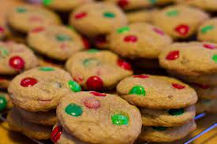

Chocolate Chipper Champs

Description
These cookies are an all time holiday favorite that are sure to be devoured by all who visit.
They are quick and easy to make, but strong hands may be needed as the batter can become very thick.
It does seem to come out a bit different every time, even if you follow the recipe to the letter. But they always taste great!
Ingredients
- 1 and 1/2 cups of packed brown sugar
- 3/4 cup margarine of butter, softened
- 1 teaspoon vanilla
- 2 eggs
- 2 1/4 cups of GOLDEN MEDAL All-Purpose Flour
- 1 cup "M&M's" Plain Choclate Candies
- 1 teaspoon baking soda
- 1/2 teaspoon salt
Steps
- Heat oven to 350 degrees
- Mix Sugar, margarine, vanilla and eggs ina large bowl until well blended
- Stir reamining ingredients
- Drop dough by rounded tablespoons on lightly greased sheet
- Bake until light brown -- 10 to 12 minutes
- Cool slight and move to wire rack